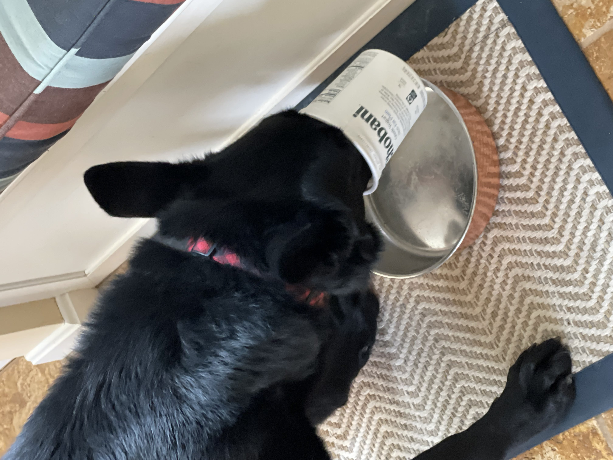
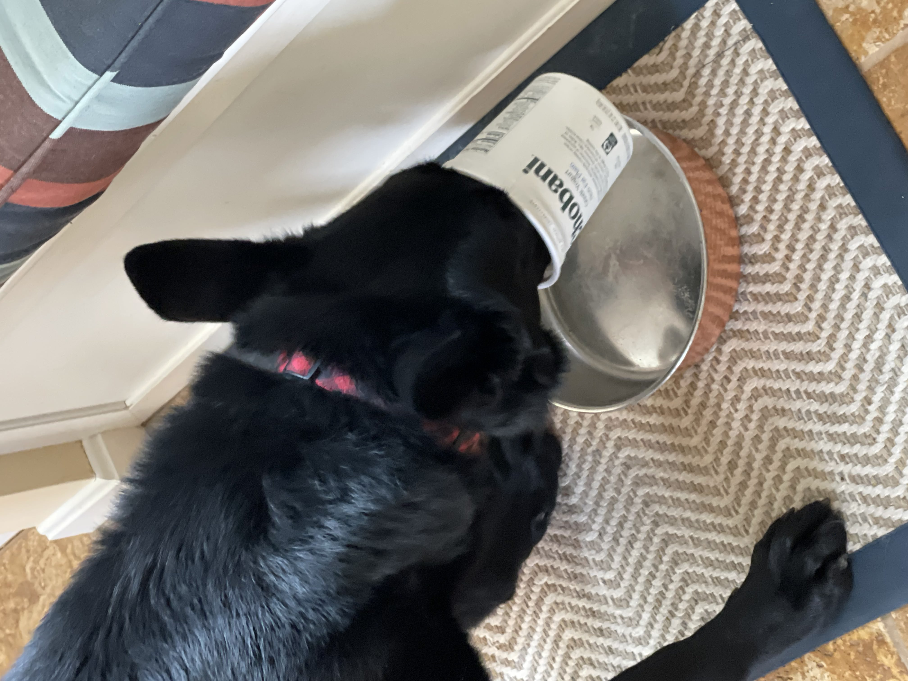
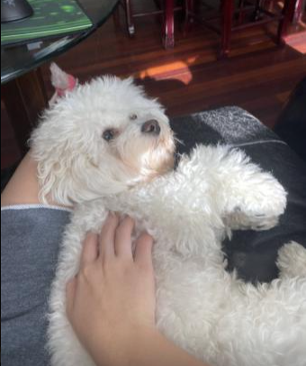
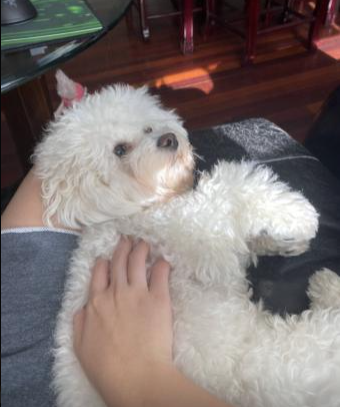
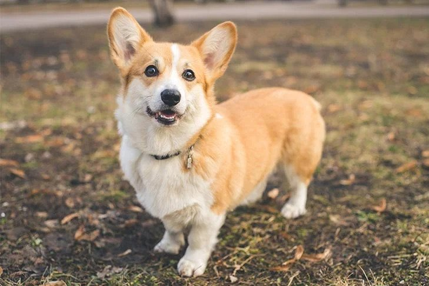
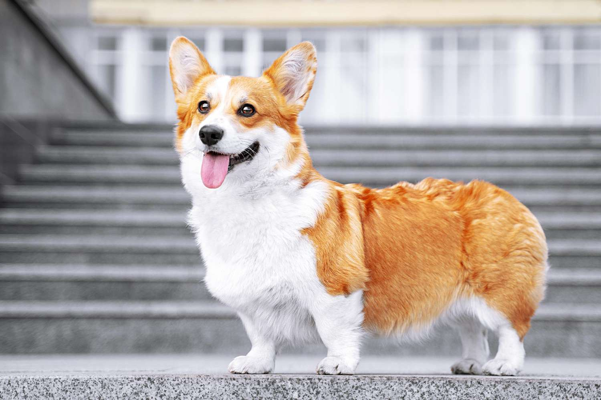
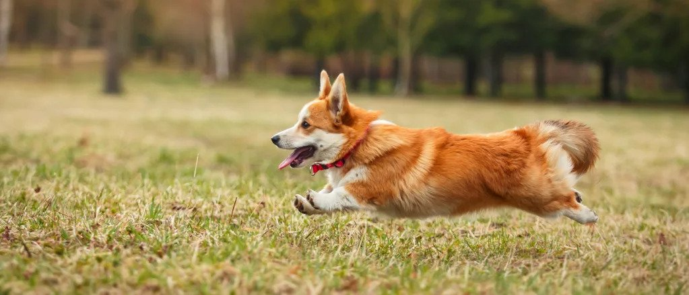
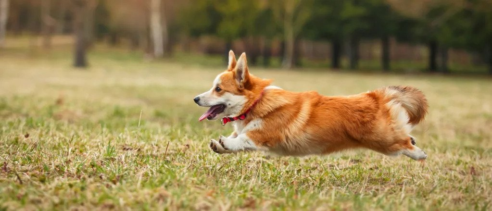
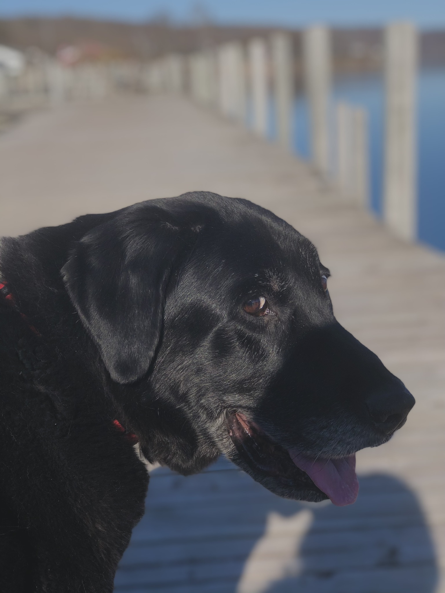
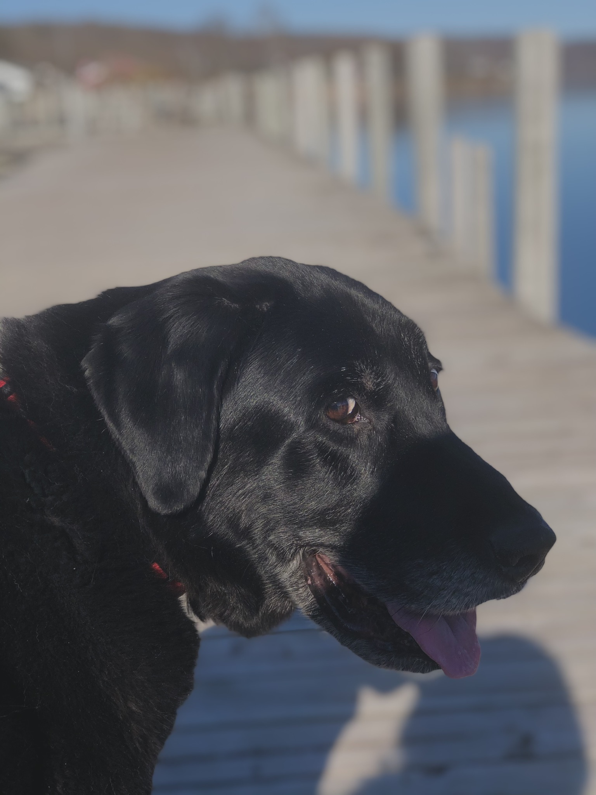

York

York loves to stay active by taking long walks near his house. He also enjoys chewing on his large assortment of toys with his favorite being his squeaky pig. York's favorite food is sausage, but cheese is another favorite.
York is a very sociable dog and is a licensed therapy dog. He frequently visits nursing homes and other places in an attempt to raise peoples' spirits. When it comes to bedtime, York prefers to sleep alone in his favorite blue dog bed. He will always be the first to get up in the morning.
Photo Gallery


 

Likes
- Food
- Playing
- Toys
Jingle

Jingle loves going outside. He used to be an outdoor/indoor cat until we realized that he loved to get injured. Now, we take him on walks with a leash which he loves! Every time he sees me carrying the leash he goes crazy and meows to go out.
Jingle is very mischievous, he has gotten into many different accidents. His first accident was outside; a bee stung his paw and he cried all night long. The second one was ALSO outside, he got stuck on a tree for four days. Finally, he came back home one day with his tail bleeding and ripped out.
Photo Gallery


Likes
- Going on Walks
- Being Petted
- Eating Treats
Basil

Basil, otherwise known as Slaysil, is a very energetic white, slightly crusty and trusty, dog (bichon). She gets princess treatment in her household but also out in public. As a consequence, she is very clingy and loves to lick, especially in the face.
She endeavors in multiple hobbies and activities, which include flying, licking, standing on two legs, ringing bells, and jumping through hula hoops.
Photo Gallery

 


Likes
- Water Bottles
- Socks
- Cats
Rocky

Rocky is a 5 year old corgi. He prefers going for a jog than lounging around the house. He's full of energy and loves to show his affection by snuggling up next to me while watching some Netflix.
One thing I definitely overlooked when we got Rocky was the amount this little guy could shed! I spent an hour vacuuming our carpet floors just the day after he entered our homes! However, I would vacuum up and down the walls of our home for him, my life-long pal and good boy.
Photo Gallery
  

Likes
- Peanut Butter
- Bouncy Balls
- Tummy Rubs
Dash

Dash is a 12-year-old black labrador. Once a playful and energetic dog, he now spends most of his time sleeping in the shade under cars. He's super friendly and would get into a stranger's van for a few pets.
Like other black labradors, Dash is highly intelligent and outgoing. During the winter times, he enjoys playing with snow, resulting with him being covered with it. If you ever see him, remember to give him a few pets!
Photo Gallery

 


Likes
- Barking Loudly
- Laying under Cars
- Standing in Front of You until You Pet Him